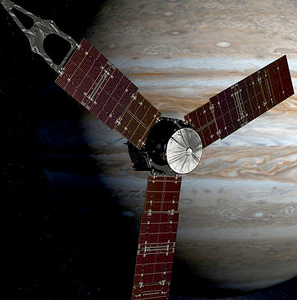
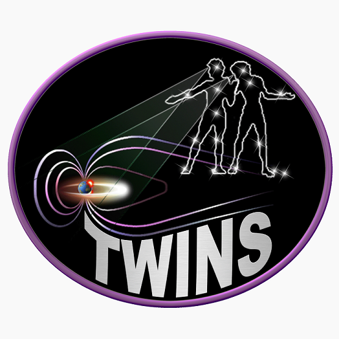

Science Missions (Alphabetically)
- CARBEX
- Cassini/Hguyens
- CeREs
- GREECE
- HIS
- IBEX
- IMAGE/MENA
- JADE-E
- JADE-I
- JUNO
- LEMMS
- MMS
- ROSINA
- SWAP
- TWINS
CARBEX
Carbon foils are widely used in space instrumentation in order to detect plasma particles. Most commonly they are used for coincidence measurements, time signals (TOF) measurements in mass spectrometers and for conversion of energetic neutral atoms to ions for further analysis. Besides the benefits, there are some unwelcomed effects as a result of their use, such as energy straggling and angular scattering. Those effects must be characterized in the highest possible detail in order to achieve the best data analysis of plasma data on several missions. CARBEX is an experiment built up for this purpose. With CARBEX we study the charge state distributions of ions as they pass carbon foils. We can also study the energy loss of ions and how it is affected by the initial trajectory, the mass, and the initial energy of the ions. The ability to examine several foils allows us to statistically determine their properties as a function of their thickness.
Cassini/Hguyens
The Cassini/Hyugens spacecraft became the first satellite to enter Saturn orbit with the objective to expand on prior research, including an in-depth analysis of plasma characteristics in the inner magnetosphere. The Cassini Plasma Spectrometer instrument suite is the primary detector for this study and its data has been extensively used to reveal many of Saturn's physical and magnetospheric attributes. My goal is to continue this research by analyzing new data and improve on earlier measurements to answer the following questions:
- What are the mechanisms that slow down the rotation of Saturn's magnetosphere?
- How are electrons heated in the inner magnetosphere and what are the expected consequences?
- How are negative ions formed in the upper atmospheres of Titan and Enceladus?
CeREs
The Compact Radiation BElt Explorer (CeREs) is part of NASA's Low-Cost Access to Space program, along with other CubeSat missions, such as Firefly and MicroMAS. CeREs is a 3U CubeSat that will have a high-inclination, zenith-pointing, low-earth orbit (~500 km in altitude) that will utilize a UHF radar groundstation. CeREs will primarily be focusing on radiation belt electrons energization and loss processes and low-energy seed populations, as well as microbursts. A secondary science goal for CeREs is the characterization of the solar electron spectra above 5 keV and solar energetic protons (SEPs) that reach the near-Earth environment. CeREs will fly the Miniaturized Electron and PRoton Telescope (MERiT), that is comprised of a low energy-range silicon avalanche photodiode (APD) sitting on top of a stack of solid state detectors (SSDs). This configuration will enable observations of electrons over a broader range of energy than previous detectors using SSD telescopes. The CeREs CubeSat is a collaboration between PI-institution NASA GSFC, University of Maryland, SwRI, and UTSA. The responsibilities of the SwRI team are to build and calibrate the APD detector for integration with the other components of MERiT, lead mission science operations as the CeREs mission SOC, and later science from analysis of CeREs data.
GREECE

GREECE is a NASA sounding rocket campaign designed to study the electromagnetic processes behind dynamic auroral displays. GREECE stands for: Ground-to-Rocket Electrodynamics-Electrons Correlative Experiment. The goal of the GREECE mission was to make high resolution rocket and ground-based investigations of small-scale auroral structure and dynamics. The aurora is one of the most dramatic open-air manifestations of electrodynamics on Earth. The auroral light, produced by energetic electrons incident on the atmosphere, represents the end product of complex electromagnetic processes which occur further out along the Earth's magnetic field. The scientific instruments on-board the sounding rocket were designed and fabricated by SwRI and the University of Berkeley Space Science Institute, and they were integrated at Wallops Flight Facility. The rocket flight took place successfully on March 3rd, 2014 and the data are currently being analyzed and prepared for publication. A complete description of the mission and the events leading up to the launch are available here.
HIS
The Heavy Ion Sensor (HIS, part of the Solar Wind plasma Analyzer (SWA) instrument suite of Solar Orbiter (SO), is currently in development at the Southwest Research Institute (SwRI). Solar Orbiter, the first probe in the joint ESA-NASA HELiophysical EXplorers (HELEX) program, has the aim of better understanding both the solar atmosphere as well as the dynamic solar wind. The HIS instrument will have the capability of measuring complete 3D heavy ion distributions in order to further study the sources of acceleration in the solar wind; turbulence evolution; shock structure, heating, dissipation; superthermal seed population compositions, distribution, and relation to SEPs; CME initiation, structure, and evolution; along with the effects of CMEs on the heliospheric magnetic field. Solar Orbiter is scheduled to launch in 2017 with nominal mission duration of 7 years.
IBEX
Interstellar Boundary Explorer (IBEX) is an Energetic Neutral Atom (ENA) mission designed to explore the boundary of where the heliosphere interacts with the local interstellar medium. The interstellar medium is composed of neutral gas, ionized and magnetized plasma, and dust from exploded stars. When our sun's supersonic solar wind interacts with the neutral gas via charge exchange, ENAs are produced. IBEX observes these ENAs and has made the first all sky maps of the boundary between our solar system and local interstellar medium. These interactions also occur in Earth's Magnetosphere, where IBEX has produced the first ENA images of magnetospheric cusps and plasma sheet.
IMAGE/MENA
Imager for Magnetopause-to-Aurora Global Exploration (IMAGE) was the first satellite with the primary mission of imaging the Earth's inner magnetosphere. IMAGE used an array of remote sensing instruments to "see the invisible". IMAGE was launched in 2000 and operated until 2005. It was placed in an inertial polar elliptical orbit with an apogee out to 7.2 Earth radii. The apogee was designed to precess ~45° per year, this apse line rotation allowed imaging of the northern polar magnetosphere from different vantage points. IMAGE carried three Energetic Neutral Atom (ENA) imagers. ENAs are neutral atoms (mostly hydrogen) with a significantly greater kinetic energy than ionospheric neutrals, enough to escape Earth's gravity. Southwest Research designed and built the Medium Energy Neutral Atom (MENA) imager. MENA is a slit imager capable of measureing ENAs from 1-30 keV. The detector can image in one dimension (field of view) while the satellite spin built up the second image dimension.
JADE-E
JADE-E is the Jovian Auroral Distribution Experiment (Electrons) on-board JUNO which is due to arrive at Jupiter in July 2016. Until the expected arrival of NASA's Juno spacecraft, Jupiter's polar magnetosphere has yet to be explored. Debated theories on the Jovian intense aurora, moon-ionosphere interactions, energy and mass transport, and reconnection are only loosely constrained by remote observations and equatorial measurements by the Galileo spacecraft. JADE-E, which is on-board Juno, will make detailed measurements of the electron energy and pitch angle distributions over the poles of Jupiter. These measurements aim to further our understanding of the current theories and will likely prompt new discussions on how this large, fast rotating planet is fundamentally different than the Terrestrial magnetosphere.
JADE-I
JADE-I is the Jovian Auroral Distribution Experiment (Ions) on-board JUNO which is due to arrive at Jupiter in July 2016. JADE-I is designed to measured the 3D ion distribution in the Jovian magnetosphere. Ions of unique E/q go through an electrostatic analyzer and smash into a carbon foil releasing electrons. The electrons and ion fly at an MCP which measures the start pulse created by the freed electrons, and the stop pulse created by the ion colliding with the MCP. The time of flight from the carbon foil is a determined by the mass/charge which allows us to identify different ions. Combining all the properties of JADE-I will be able to essentially map out the spatial and energy distributions of ions regions JUNO is orbiting.
JUNO
The goal of the Juno mission is to investigate the origin, interior structure, atmospheric composition, atmospheric dynamics, and polar magnetosphere of Jupiter. Juno launched in August 2011 and will reach Jupiter in July 2016, where it will complete 32 orbits a controlled burn-up in Jupiter's atmosphere. Juno will make maps of the gravity, atmospheric composition, and magnetic field, as well as image the aurora and determine the plasma processes responsible for the aurora. First-time images of the polar region of Jupiter will be captured, and a new technique will be implemented, where passive microwave sounding is used to determine the composition, structure, and dynamics of the deep atmospheric regions. My work concerns understanding how the aurora works and interacts with the upper atmosphere. To accomplish this I will use inputs from the particle and fields observations in the auroral zone. These inputs will be put into a model that will simulate the auroral image output and then compare the simulated images to Juno's auroral images.
LEMMS
LEMMS is the Low-Energy Magnetospheric Measurement system on-board the Cassini mission. The Cassini mission to Saturn has been actively collecting data since 2004 and still continues to make new discoveries. This mission has literally changed our understanding of magnetospheric dynamics in large rotating planets and discovered wonders like the geologically active satellite Enceladus, which ejects water/ice through vents under its surface. LEMMS measures energetic charged particles and their importance in magnetospheric dynamics. LEMMS has revealed new and interesting physics pertaining to the transport, source, loss, and acceleration mechanisms present at Saturn. Ten years of data collection have also revealed seasonal change effects, periodicities that are unexplained, and insight into the global dynamics of charged particles. Cassini will soon be approaching a polar orbit similar to Juno's around Jupiter, which will provide an unsurpassed comparative study of the two largest planets in our solar system.
MMS
The upcoming NASA Magnetospheric MultiScale (MMS) mission, headed by a team of scientists from SwRI and several other institutions, is a four-spacecraft constellation of solar-terrestrial probes that will study the microphysics of the dayside and nightside reconnection diffusion regions. Reconnection is a multi-scale phenomenon; it is enabled by physics that occurs within the micro-scale electron diffusion region but has global-scale consequences for the topology of the terrestrial magnetic field. The NASA prime mission will study the micro-scale structure of the fields and plasma flows inside the electron decoupling region. As is the mission statement, MMS will "unlock the secrets of reconnection". The mission will study reconnection in the near-Earth environment with a suite of instruments capable of characterizing the electromagnetic plasma environment with unprecedented temporal and spatial resolution.
The principal investigator on the MMS mission payload is Jim Burch, a senior scientist and vice president of SwRI. SwRI has also contributed the four identical Hot Plasma Composition Analyzer (HPCA) instruments. HPCA will be responsible for measuring the 3D distribution function of solar wind an magnetospheric plasma ion species. With its groundbreaking radio frequency filter system, which allows the instrument to have a dynamic geometric factor, HPCA will be able to simultaneously sample the magnetospheric and magnetosheath plasma regimes present in the dayside and nightside reconnection regions. HPCA was developed and calibrated at SwRI by a team of scientists and engineers lead by, Stephen Fuselier, the director for the Space Science Department of SwRI and a member of the SwRI-UTSA adjoint faculty.
ROSINA
The Rosetta Orbiter Spectrometer for Ion and Neutral Analysis (ROSINA) is one of the main instruments of the ambitious Rosetta mission of the European Space Agency, targeted at comet 67P-Churyumov-Gerasimienko. Rosetta will be the first probe to orbit a comet nucleus and land a probe on the surface. As the comet draws close to the sun, it will release numerous particles and gases, creating an "atmosphere" made of materiel that is relatively unaltered since the dawn of our solar system. The role of ROSINA is to sample and analyze this material. ROSINA consists of three instruments: two mass spectrometers and a pressure sensor. Together, those instruments provide Rosetta with unprecedented range and resolution for the analysis of the molecules in the comet's tail, including different organic species.
SWAP
Solar Wind Around Pluto (SWAP) instrument is an electrostatic analyzer on board New Horizons spacecraft. Main purpose of SWAP is to study the solar wind interaction with planet Pluto. During its Jupiter flyby in 2007, SWAP obtained measurements of the low energy ions in the previously unexplored region of the distant Jovian magnetotail, magnetosheath and boundary layer. Interesting features were revealed after SWAP data studies. Jovian magnetotail seems to be different than the Earth like magnetospheric model. Possibly the differences are due to different type of solar wind- magnetospheric interactions and due to the dominant internal processes in the Jovian magnetosphere. In current studies, SWAP spin spectrograms are analyzed in order to estimate the ions bulk properties, which are crucial to determine the physical processes in this interesting magnetosphere.
TWINS
Two Wide-angle Imaging Neutral-atom Spectrometers (TWINS) is a NASA Explorer Mission-of-Opportunity stereoscopically imaging the Earth's magnetosphere since June 2008. TWINS' extended science mission focus is to:
- determine the structure and evolution of the storm-time magnetosphere,
- understand the energization and transport of magnetospheric plasma populations, and
- characterize the storm-time source and sinks of energetic magnetospheric plasma.